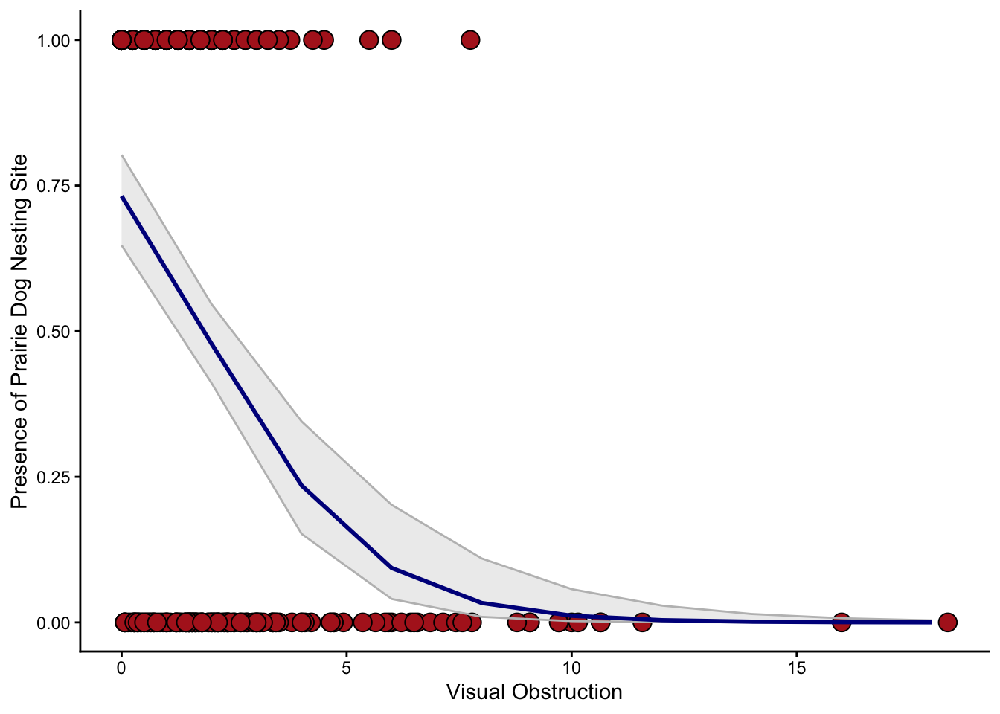
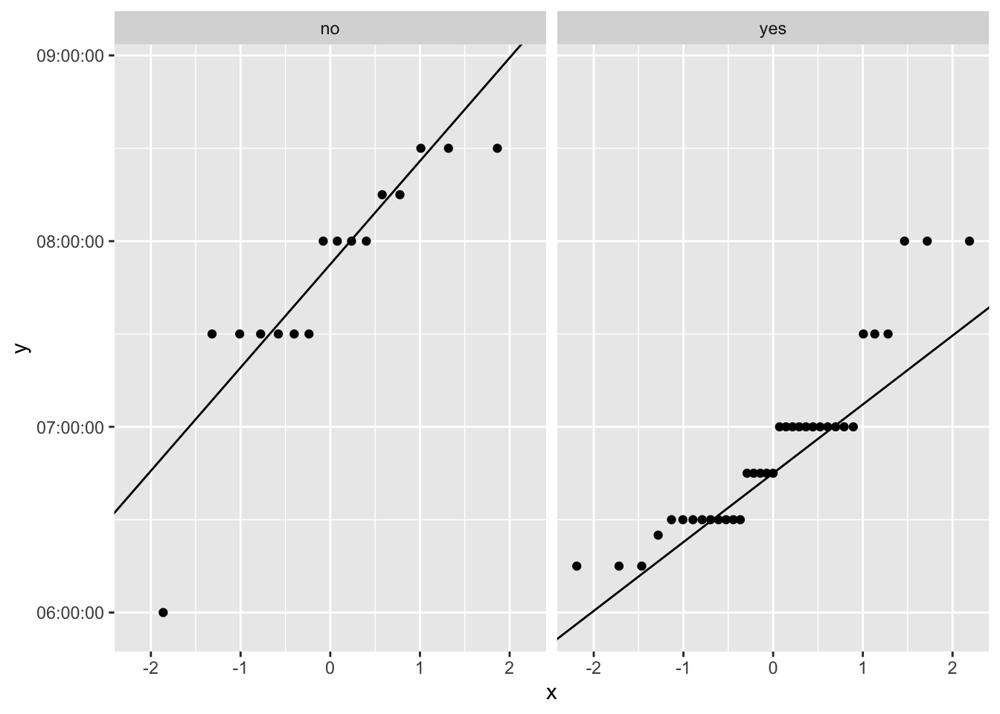
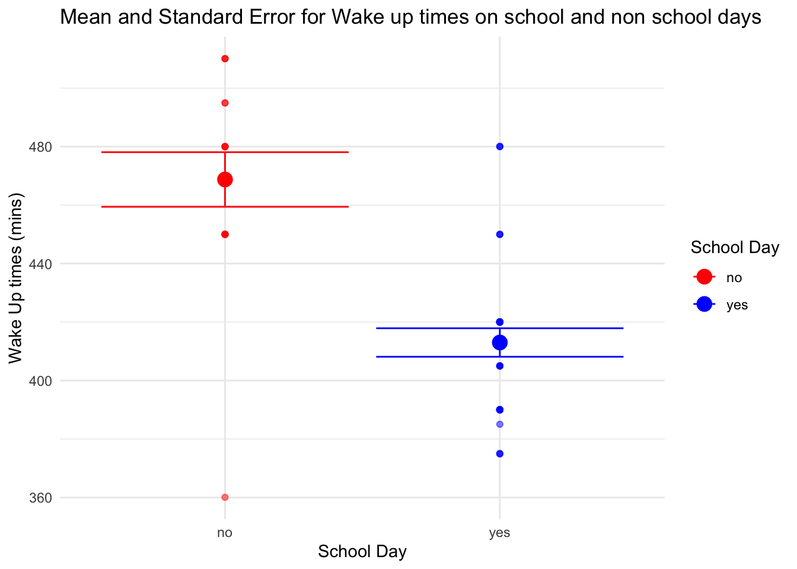

library(tidyverse) #loading in tidyverse
library(here) #loading in here
library(janitor) #loading in janitor
library(readxl) #loading in readxl
library(ggeffects) #loading in ggeffects
library(knitr) #loading in knitr
library(MuMIn) #loading in MuMIn
library(DHARMa) #loading in DHARMa
library(effectsize) #loading in effectsize
library(dplyr) #loading in dplyr
#reading in all data using here function to tell r where the data is located
kelp <- read_csv(
here(
"Data",
"kelp.csv"
))
mopl <- read_csv(
here(
"Data",
"MOPL_nest-site_selection_Duchardt_et_al._2019.csv"
)
)
my_data <- read_csv(
here(
"Data",
"my_dataHW2 - Sheet2.csv"
)
)Final for Env S 193DS
Set Up
Problem 1. San Joaquin River Delta
a.
In part 1, they used a linear regression because they were testing the relationship between a quantitative predictor variable (precipitation) and a quantitative response variable (flooded wetland area). In part 2, because they were testing for the median flooded wetland area difference between two or more groups, they used a Kruskal-Wallis test.
b.
A boxplot could be created to highlight the medians and interquartile ranges of the median flooded wetland area across the different water year classifications. On the x-axis would be the different water year classifications and on the y-axis would be the recorded flooded wetland area, including the medians. In addition to the boxplot, the points could be jittered vertically to further show the data.
c.
Precipitation was not a statistically significant predictor of flooded wetland area in the San Joaquin River Delta (linear regression, F-statistic(degrees of freedom)= F-statistic, \(R^2\) = coefficient of determination, p = 0.11, \(\alpha\) = 0.05). The median flooded wetland area did not differ significantly between water year classifications (wet, above normal, below normal, dry, and critical drought) (Kruskal-Wallis: χ²(degrees of freedom) = chi-squared, p =0.12).
d.
Delta outflow, which is a continuous and quantitative variable, could have influenced the flooded area of the wetland. This could impact the flooded area of the wetland because it can alter the amount of water that will remain in the wetland depending on how much water is flowing into the delta and out of the wetland after a rain event.
Problem 2. Data Visualization
a.
kelp_clean <- kelp |>
# function 3
clean_names() |> #removes underscores and capital letters
# function 6
filter(site %in% c("IVEE", "NAPL", "CARP")) |> #filtering by three sites
# function 8
mutate(site = case_when( #changing site names
site == "NAPL" ~ "Naples", #changing site NAPL to Naples
site == "IVEE" ~ "Isla Vista", #changing site IVEE to Isla Vista
site == "CARP" ~ "Carpinteria")) |> #changing site CARP to Capinteria
# function 2
mutate(site = as_factor(site), #converts the site name to a categorical variable
site = fct_relevel(site,
"Naples", "Isla Vista", "Carpinteria")) |> #changes the order of factor levels
# function 1
filter(!(date == "2000-09-22" & transect == "6" & quad == "40"))|> #filtering by the date, transect, and quad number
# function 5
group_by(site, year) |> #grouping by site name and year
# function 7
summarize(mean_fronds = mean(fronds)) |> #creating a column for the mean
# function 4
ungroup() #ungrouping any prior groupings`summarise()` has regrouped the output.
ℹ Summaries were computed grouped by site and year.
ℹ Output is grouped by site.
ℹ Use `summarise(.groups = "drop_last")` to silence this message.
ℹ Use `summarise(.by = c(site, year))` for per-operation grouping
(`?dplyr::dplyr_by`) instead.slice_sample(kelp_clean, #taking a sample of kelp_clean
n = 5) #displaying 5 random rows# A tibble: 5 × 3
site year mean_fronds
<fct> <dbl> <dbl>
1 Naples 2000 1.89
2 Isla Vista 2017 25.0
3 Carpinteria 2013 2.93
4 Naples 2002 3.01
5 Naples 2004 7.81str(kelp_clean) #inspecting the structure of kelp_cleantibble [77 × 3] (S3: tbl_df/tbl/data.frame)
$ site : Factor w/ 3 levels "Naples","Isla Vista",..: 1 1 1 1 1 1 1 1 1 1 ...
$ year : num [1:77] 2000 2001 2002 2003 2004 ...
$ mean_fronds: num [1:77] 1.8947 0.0606 3.0111 9.2596 7.8141 ...b.
The number of fronds in that “quad” in that “transect” is -9999. This value represents the data sheet either being lost or the data was not collected for a particular species, which I found in the Methods and Protocols section of the data page.
c.
ggplot(data = kelp_clean, #using kelp_clean df
aes(x = year, #year on x axis
y = mean_fronds, #mean_fronds on y axis
color = site)) + #grouping by site
geom_point() + #inserting points on graph
geom_line() + #adding line to the graph
labs(x = "Mean kelp fronds per year", #titling the x axis
y = "Year", #titling the y axis
title = "Sites vary in mean kelp fronds per year") + #adding a title
scale_color_manual(values = c("Naples" = "cyan4", #changing the color of Naples points and line
"Isla Vista" = "burlywood3", #changing the color of Isla Vista points and line
"Carpinteria" = "grey")) + #changing the color of Carpinteria points and line
theme_minimal() + #changing theme to minimal
theme(plot.title = element_text(hjust = 0.6), #altering plot title position to be centered
text = element_text(family = "Futura")) #changing the overall text font 
d.
Isla Vista had the most variable mean kelp fronds per year because it has the highest peaks overall and the greatest difference in increases and decreases per year (represented by the changes in slope of line between each yearly point). Carpinteria had the least variable mean kelp fronds per year because the line has fairly consistent minimums and maximums (represented by the highest and lowest points).
Problem 3. Data Analysis
a.
The 1s and 0s represent whether the site was used for nesting by Mountain Plovers, where 0 is the absence and 1 is the presence.
b.
The variable for distance to prairie dog colony edge is a continuous variable. This could influence the probability of Mountain Plover nest site use because they help create their desired nesting sites by disturbing soil and reducing vegetation, which is included in the introduction section of the paper. The variable for visual obstruction is a continuous variable. It could influence the probability of Mountain Plover nest site use because it can deter Plovers from nesting in an area that has too much dense vegetation, which is included in introduction section of the paper.
c.
| Model number | Distance to prairie dog colony edge | Visual obstruction | Predictors |
|---|---|---|---|
| 0 | no predictors (null model) | ||
| 1 | X | X | all predictors (full model) |
| 2 | X | only visual obstruction | |
| 3 | X | only distance to prairie dog colony edge |
d.
e.
AICc( #running the AICc for each of the models
model0,
model1,
model2,
model3
) |>
arrange(AICc) #arranging AICcs from lowest to highest df AICc
model2 2 331.8130
model1 3 333.8293
model0 1 384.6318
model3 2 386.1351The best model as determined by Akaike’s Information Criterion (AIC) was the model with only visual obstruction.
f.
sim_res <-simulateResiduals(fittedModel = model2) #creating simulated residuals
plot(sim_res) #plotting simulated residuals
g.
model_preds <- ggpredict( #estimating from regression model
model2, #using model 2
terms = "vo_nest" #with the visual obstruction variable
)Data were 'prettified'. Consider using `terms="vo_nest [all]"` to get
smooth plots.model_preds #displaying output# Predicted probabilities of used_bin
vo_nest | Predicted | 95% CI
--------------------------------
0 | 0.73 | 0.65, 0.80
2 | 0.48 | 0.41, 0.55
4 | 0.24 | 0.15, 0.35
6 | 0.09 | 0.04, 0.20
10 | 0.01 | 0.00, 0.06
12 | 0.00 | 0.00, 0.03
14 | 0.00 | 0.00, 0.01
18 | 0.00 | 0.00, 0.00
Not all rows are shown in the output. Use `print(..., n = Inf)` to show
all rows.ggplot(data = model2, #using model2 data frame
aes(x= vo_nest, #labeling x axis
y = used_bin)) + #labeling y axis
geom_point(size = 4, #changing size of point
fill = "firebrick", #filling the point with red
shape = 21) + #changing the shape to be filled circles
geom_ribbon(data = model_preds, #creating CI
aes(x = x, #using x as x axis
y = predicted, #determining y is predicted output
ymin = conf.low, #ymin is the lower bound of CI
ymax = conf.high), #ymax is the higher bound of CI
alpha = 0.1, #changing transparency
color = "grey") + #making color gray
geom_line(data = model_preds, #creating line based on model prediction data
aes(x = x, #using x as x axis
y = predicted), #determining y is predicted output
linewidth = 1, #changing width of line
color = "blue4") + #changing line color
theme_classic() + #removing gridlines
labs(x = "Visual Obstruction", #labeling x axis
y = "Presence of Prairie Dog Nesting Site") #labeling y axis Warning: `fortify(<lm>)` was deprecated in ggplot2 4.0.0.
ℹ Please use `broom::augment(<lm>)` instead.
ℹ The deprecated feature was likely used in the ggplot2 package.
Please report the issue at <https://github.com/tidyverse/ggplot2/issues>.
h.
Figure 1. This figure shows the linear regression model of Mountain Plover nest site occupancy for site that had only visual obstruction. The red points show the observed data, where 0 is absence of nesting sites and 1 is the presence. The blue line shows the fitted regression and the gray lines show the 95% confidence intervals around the predictions. This figure shows the prevalence of pairie dog nesting sites decreased as visual obstruction increased. Reproduced from Duchardt, Courtney; Beck, Jeffrey; Augustine, David (2020). Data from: Mountain Plover habitat selection and nest survival in relation to weather variability and spatial attributes of Black-tailed Prairie Dog disturbance [Dataset]. Dryad. https://doi.org/10.5061/dryad.ttdz08kt7
i.
vo_data <- data.frame(vo_nest = 0)
predict_prob_vo0 <- predict(model2, # using model2
newdata = vo_data, #making it based on vo_data
type = "response") #labeling variable type
predict_prob_vo0 #displaying output 1
0.7320954 j.
Figure 1. shows the predicted probability of occupancy of Mountain Plover nest site decreased when visual obstruction increased. The predicted probability of the nest site occupancy at 0, where there was no visual obstruction, was 0.73. This indicates that the probability of occupancy when there was no obstruction was relatively high. This pattern is consistent with what is known about Mountain Plover preferred nesting sites, as they tend to prefer flat, open nesting grounds.
Problem 4. Affective and Exploratory Visualizations
a.
The visualizations from Homework 2 and Homework 3 are similar in the overall outline of the visualization. They have the same x and y axes and have similar shapes, given that the visualization for Homework 3 is an abstract version of Homework 2. However, the final product for the affective visualization differs in that it displays another variable than the initial visualization it was based on does. The affective visualization combines the two initial visualizations in Homework 2, as it displays the school and non school days, as well as a time series plot. In these visualizations, I see a trend in my wake up times on weekends being later than on week days. This is consistent between all visualizations, as they all display, in some way, wake up times for weekends and school days. In week 9, the primary feedback I got was to add in another variable to my visualization. One idea presented was to add in the time of my first obligation as clouds or something similar. I realized I wouldn’t be able to do this because there was such a big contrast between my first obligation and my wake up time. Instead, I added another color to represent when the weekends were to differentiate and highlight the differences in wake up times, which was also my primary predictor variable.
b.
A two-sample t-test is one analysis that could be applied to my initial research question of: “Does the time I wake up differ between school days and non-school days?” This test is appropriate to my question because it is comparing two separate groups and a two-sample t-test compares the means of two separate groups. My response variable, which is my wake up time, is quantitative and my predictor variable, which is whether or not it is a school day, is categorical with two categories.
c.
Checking Assumptions
Normal Distribution:
my_data_clean <- my_data |>
clean_names()
ggplot(data = my_data_clean,
aes(sample = wake_up_time_hrs_min)) +
geom_qq() +
geom_qq_line() +
facet_wrap(~ school_day_yes_no)
The distribution does not appear to be normally distributed, but the central limit theorem applies (n>30), so the normality conditions can be relaxed.
F test of Equal Variances:
#doing f-test of equal variances
var.test(
wake_up_time_hrs_min ~ school_day_yes_no, #labeling response variable and grouping variable
data = my_data_clean #determining data frame
)
F test to compare two variances
data: wake_up_time_hrs_min by school_day_yes_no
F = 1.6754, num df = 15, denom df = 34, p-value = 0.2094
alternative hypothesis: true ratio of variances is not equal to 1
95 percent confidence interval:
0.7454053 4.3833593
sample estimates:
ratio of variances
1.67538 The group variances were equal (F-test of equal variances, F(11,23) = 2.11, p = 0.13).
Running t-test and Calculating effect size
t.test(
wake_up_time_hrs_min ~ school_day_yes_no, #formula: response variable ~ grouping variable
data = my_data_clean, #labeling data frame
var.equal = TRUE #argument for equal variances
)
Two Sample t-test
data: wake_up_time_hrs_min by school_day_yes_no
t = 5.8279 secs, df = 49, p-value = 4.304e-07 secs
alternative hypothesis: true difference in means between group no and group yes is not equal to 0
95 percent confidence interval:
2191.585 secs 4498.415 secs
sample estimates:
Time differences in secs
mean in group no mean in group yes
28125 24780 #calculating effect size
my_data_separate <- my_data_clean |>
separate(wake_up_time_hrs_min, into = c("hour", "minute", "seconds"), sep = ":", convert = TRUE) |> #altering data to separate minutes and hours
mutate(wake_up_time_min = hour * 60 + minute) #creating a new column to have one value to calculate cohen's d
cohens_d(wake_up_time_min ~ school_day_yes_no, #formula: response variable ~ grouping variable
data = my_data_separate, #labeling data frame
var.equal = TRUE) #argument for equal variancesCohen's d | 95% CI
------------------------
1.76 | [1.07, 2.44]
- Estimated using pooled SD.d.
my_data_summary <- my_data_separate |> # start with the my_data_separate data frame
group_by(school_day_yes_no) |> # group by school day
summarize(mean = mean(wake_up_time_min), # calculate the mean
n = length(date), # count the number of observations
df = n - 1, # calculate the degrees of freedom
sd = sd(wake_up_time_min), # calculate the standard deviation
se = sd/sqrt(n), # calculate the standard error
tval = qt(p = 0.05/2, df = df, lower.tail = FALSE), # find the t value
margin = tval*se, # calculate the margin of error
ci_lower = mean - margin, # calculate the lower bound of the confidence interval
ci_higher = mean + margin # calculate the upper bound of the confidence interval
)
ggplot(data = my_data_summary, # use the summary data frame
aes(x = school_day_yes_no, #determining x axis
y = mean, #determining y axis
color = school_day_yes_no)) + # color the points by day type
geom_point(size = 4) + # plot the mean
geom_jitter(data = my_data_separate,
aes(x = school_day_yes_no,
y = wake_up_time_min,
color = school_day_yes_no),
width = 0,
alpha = 0.5,
height = 0.1) +
geom_errorbar(aes(ymin = mean - se, # plot the standard error
ymax = mean + se)) +
labs(title = "Mean and Standard Error for Wake up times on school and non school days", #providing title
x = "School Day", #naming x axis
y = "Wake Up times (mins)") + #naming y axis
scale_color_manual(name = "School Day", values = c("red", "blue")) + #changing legend title and colors
theme_minimal() #changing theme to minimal
e.
Figure 1. This figure shows the mean, standard error, and underlying data of wake up times for school and non-school days, where school days are in blue and non-school days are in red. The mean is represented by the large points and the standard error is represented by the bars. The jittered points represent the underlying data.
f.
There was a significant difference in mean wake up time between school (n=35) and non school days (n=16) with a large effect size (Student’s two sample t-test, t(5.8279) = 49, p<0.001, \(\alpha\) = 0.05, Cohen’s d = 1.76).
g.
I completed the activity in section.